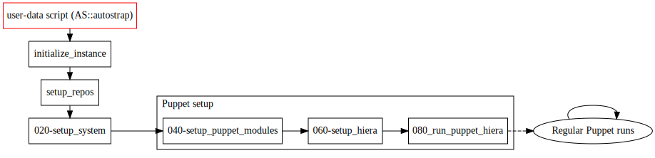
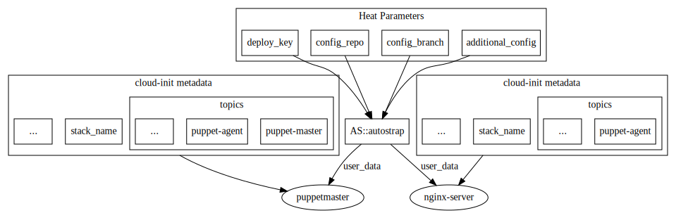
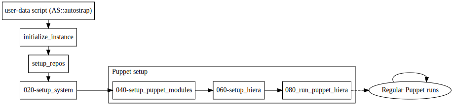
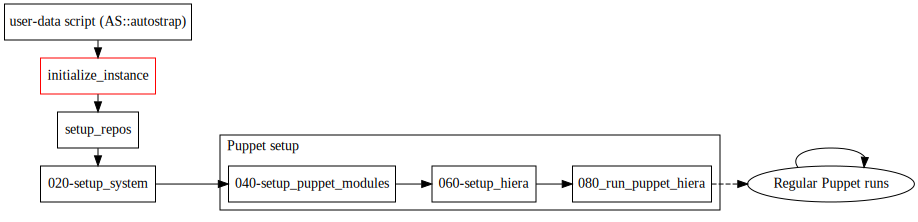
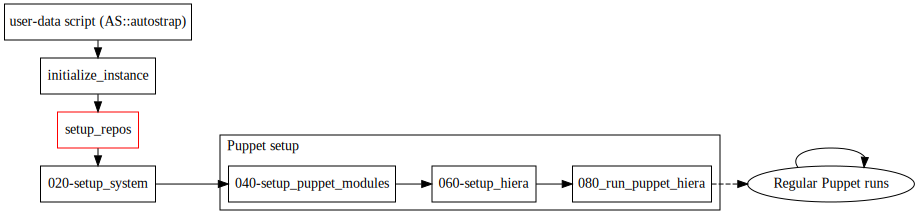
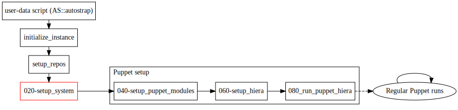
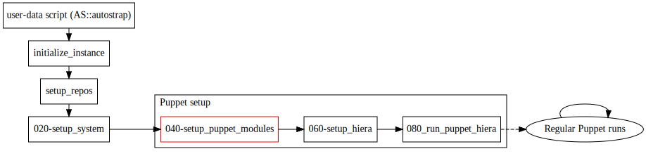
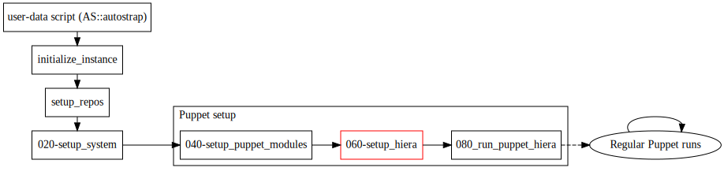
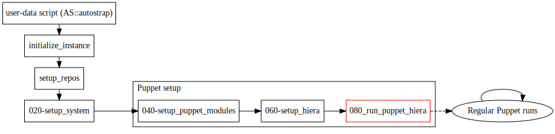

- Starting Point: A Heat Template
- First Bootstrapping Stage: The AS::autostrap Heat resource
- Second Bootstraping Stage: The bootstrap-scripts repository
In this section we will describe the life cycle of a Autostrap deployed service stack, from instantiating a heat template to the finished application, in particular this includes:
-
The components a Heat template needs for the instances within to be deployed by Autostrap
-
The individual stages in an instance's bootstrapping proces.
Read this section to get a high-level overview of what happens during the Autostrap bootstrapping process and how it is kicked off. You can later complement it with the Configuration Sources section for an in-depth discussion of the configuration sources that govern Autostrap's behaviour.
Starting Point: A Heat Template

Once a machine is up, cloud-init will execute the user-data script generated by
AS::autostrap. This
script will install git, copy the deploy key to /root/.ssh, and clone
bootstrap-scripts. Once
bootstrap-scripts is available, the user-data scripts will execute the
initialize_instance script in that repository's top-level directory, ushering
in the second bootstrapping stage.
Deployment of a service stack is kicked off by a Heat template. The schematic
below shows the key components of the
nginx-master-agent
example Heat template and their relation to each other:

There are two kinds of configuration the heat template passes to the two
instances (puppetmaster and nginx-server):
-
A user-data script. This script is generated by the AS::autostrap Heat resource and commonly parametrized through Heat. At a minimum, it needs a
config_repoparameter pointing at your project-config repository. Commonly there is only oneAS::autostrapresource that is passed to all servers in the stack. -
cloud-init metadata keys that pass information for use inside the node and control various aspects of puppet configuration. The most important such parameter is
topics. This parameter governs the topics from global-config that the second bootstrapping stage's puppet run will deploy on the machine in question. In the example this makespuppetmastera puppet master and agent, andnginx-servera puppet agent.
Once the Heat template is finished it can be deployed with a command that might look roughly as follows:
heat stack-create -f nginx-master-agent.yaml \
-P config_repo=git@gitlab.example.com/my_project_config.git \
-P key_name=mykey \
-P deploy_key="$(cat ~/.ssh/deploy_key)" \
nginx-master-agent
Once this command is issued, heat will create the stack's constituent resources. As machines come up, their AS::autostrap generated user-data script will be run by cloud-init. To provide an overview of the bootstrapping process we will use the following schematic throughout the rest of this section, with the current step highlighted:

First Bootstrapping Stage: The AS::autostrap Heat resource
Once a machine is up, cloud-init will execute the user-data script generated by
AS::autostrap. This
script will install git, copy the deploy key to /root/.ssh, and clone
bootstrap-scripts. Once
bootstrap-scripts is available, the user-data scripts will execute the
initialize_instance script in that repository's top-level directory, ushering
in the second bootstrapping stage.
Second Bootstraping Stage: The bootstrap-scripts repository
Once the user-data script has run its course, it executes the script
initialize_instance in the boostrap-scripts repository it just cloned.
Starting Point: initialize_instance

initialize_instance is primarily a wrapper for starting the various scripts
in the second bootstrapping stage. It keeps track of progress (and writes
status messages to /dev/console for outside visibility) and ensures all
second stage output is logged to /var/log/initialize_instance.log. Once all
second stage scripts have run, initialize_instance will report conclusion of
the bootstrapping process to /dev/console.
All second stage bootstrapping scripts are drawn from two sources:
-
The
bootstrap.d/subdirectory of the global-config repository. -
The
bootstrap.d/subdirectory of your project-config repository.
The contents of both these directories are symlinked to the
/opt/scripts/stage/ directory. All files in this directory are executed in
shell globbing order, i.e. a script named 000-first will be executed before
111-last (much like in sysvinit's rc*.d directories). All scripts in
global-config are prefixed with a zero-padded, three digit multiple of 20,
e.g. 000-first, 020-second, 040-third, ...
If you add any scripts to your project-config repository's
bootstrap.d directory please do not prefix them with multiples of 20 since
these are reserved for scripts from global-config.
Apart from that anything goes. I.e. you can number them in a way that places
them between any two scripts from global-config. If,
for instance, you wanted your own script to run between 020-setup_system and
040-setup_puppet_modules, you could name it 030-myscript.
The rest of this section will give a rundown of the bootstrapping scripts pulled in from the global-config repository.
Puppet Setup: Configuration Repository Retrieval

The setup_repos script clones the two main configuration repositories that combine
into the service stack's configuration (global-config and a
project-config repository), as well as the repodeploy
puppet module. The URLs and revisions for these repositories are supplied as environment variables
passed through from the user-data script.
Packages and System Setup

setup_system is the first real step in the second bootstrapping stage. It
configures apt repositories, installs packages required during the second
bootstrapping stage, and configures various things in a sensible manner. Once
it has finished, Puppet setup begins.
Puppet Setup: Temporary Module Installation

With the preliminaries out of the way, Puppet
deployment can now begin in earnest. As a first step, setup_puppet_modules
performs for puppet what setup_system performed for the whole system: it
installs a small selection of Puppet modules into /etc/puppet/modules. These
modules are the bare minimum required for a first run of
puppet-repodeploy.
Puppet Setup: Hiera Configuration and Repository Checkouts

setup_hiera is the centerpiece of Autostrap's puppet bootstrapping process.
It performs two tasks:
-
It generates a
hiera.yamlconfiguration file. This file contains a list of all the configuration files that are consulted by puppet running on this machine (both in masterless mode, and by a puppet master if this machine happens to be one). -
It clones the additional configuration repositories specified in the
additional_configHeat parameter and adds corresponding entries in hiera.yaml. -
It runs puppet-repodeploy to retrieve the repositories defined in the
repodeploy::reposhash. This hash may occur anywhere in the files listed inhiera.yaml. Multiple occurences are merged.
The contents of hiera.yaml vary based on the following parameters:
The cloud-init metadata entry topics |
This is a space delimited list that determines the topics to be deployed by (a) run_puppet_hiera and (b) subsequent puppet runs, if the puppet-masterless topic has been deployed to this machine. All configuration files that make up the topic in question will be entered in hiera.yaml. |
The contents of puppet/topics in the project-config repository |
This is mainly relevant for a Puppet master. This file contains a list of all the topics this puppet master serves to its agents. setup_hiera will add the contents of these topics' config.d and repos.d subdirectories to hiera.yaml. Thus both the configuration relevant to the topics in question and the puppet modules required for their deployment will be available on the puppet master. |
Once hiera.yaml has been generated and repodeploy has retrieved all
repositories, setup_hiera will remove /etc/puppet/modules, since it has
served its purpose: the modules therein were only required to run
puppet-repodeploy. From this point onward, only puppet modules retrieved by
puppet-repodeploy will be used. The system is now ready for its first
masterless puppet run.
Disabling the hiera.yaml generator
If you would like to have full control over your hiera.yaml you can skip this
step by passing a path to your own hiera.yaml through the hiera_yaml_location
metadata parameter.
If you specify this path, you are responsible for ensuring the file thus
referenced exists on your system (we recommend putting it into your
project-config repository which is cloned to /opt/config/project.
Note: while there is no warranty to void, this will lose you most Autostrap features: all you will get is an environment that runs puppet driven by the hiera.yaml you provided at the end of the bootstrapping process.
If you chose to do this, there are two ways to pass the hiera_yaml_location
parameter, depending on how you run Autostrap:
Using the AS::autostrap Heat Resource
If you are using Heat you can specify this parameter
as part of your instance's metadata hash:
server:
type: OS::Nova::Server
properties:
name: myserver
metadata:
hiera_yaml_location: '/opt/config/project/puppet/hiera.yaml'
Using cloudstrap.standalone
If you are using autostrap.standalone to start
the bootstrapping process you can specify this parameter by adding a -m
option:
autostrap.standalone -m hiera_yaml_location=/opt/config/project/puppet/hiera.yaml
Puppet Setup: First Puppet Run

At the end of the puppet bootstrapping process, run_puppet_hiera will run
puppet, driven by the hiera.yaml just generated. This puppet run will deploy
all topics listed in the machine's topics metadata entry. This list
usually includes either puppet-masterless or puppet-agent. Hence this first
puppet run ensures continuing management of the machine's configuration by
regular puppet runs from now on.